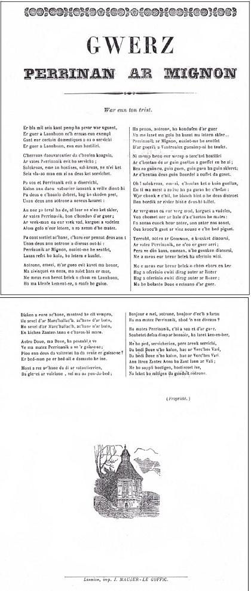
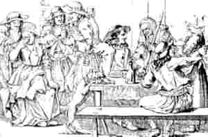

Emzivadez Lannuon
Ton MIDI(Barzhaz Breizh)
(Kanet gant Serge Nicolas ha Thierry Rouaud:
kan ha diskan - Ton simpl pe Ton kentañ)
|
1.Er bloazvez-man mil c'hwec'h kant pevar ugent trizeg,
Er gerig a Lannuon zo eur gwalleur c'hoarvet; 2 Er gerig a Lannuon en eun ostaliri, Da Berinaig Mignon a oe matezh enni. 3. - Aozit deom-ni, hostizez, peb tra evit koania Stlipoù fresk ha kig rostet ha gwin mad da eva! 4. P'o-doe debret hag evet peb hini leiz e lèr - Setu arc'hant, hostizez, kontit blank ha diner; 5. Setu arc'hant, hostizez, kontit blank ha diner; Ho matezh gant eul letern da zond d'on c'haz d'ar ger!- 6. Pa oant i war an hent braz eur pennadig mad aet, Eur gomz-kuzh warbenn ar plac'h tredo oa bet kaset. 7.- Plac'hig koant, ho tendigoù, ho tal hag ho tiou jod, A zo gwenn evel eon ar c'hoummoù war en aod! 8. - Maltoterien, me ho ped, am ,lezit evel on, Evel lakaet gant Doue, lakaet gant Doue on! 9. Ha pa ven kant gwech bravoc'h, ya, kant gwech bravoc'h c'hoazh, Na vin 'vidoc'h, aotrounez, na vin na well na wazh 10. - Hervez ho komzoù mignon, va merc'hig, me a gred Emaoc'h bet gant re Vegar, pe gant kloer desket 11. Hervez ho komzoù mignon, va merc'hig, me a gred D'ar gouant o teskiñ pre'ek gant menec'h emaoc'h bet 12. - D'ar gouant o teskiñ pre'ek e Begar n'emaon bet Na kennebeut e leac'h all, avat, gant kloareg 'bet 13. Hogen, e-barzh em zi-me, ha war oaled va zad, Em eus graet, va aotrounez, bep seurt mennozioù mat 14. - Taolet aze ho letern, ha c'hwe'et ho kouloù ; Setu 'r yalc'h leun a arc'hant, ma hoc'h eus c'hoant, ho po 15. - Ne ket me eo 'r femeulenn, a vez dre ruioù kêr, O kemeret daouzek blank ha c'hoazh triwec'h tiner ! 16. Me 'm eus da vreur ur beleg er gêr a Lannuon Mar klevfe pezh a lârit, rannafe e galon 17. Me ho ped, maltouterien, pezet ar vadelezh D'am zeurel e-kreiz ar mor kent e'it kement c'hloaz ! 18. Me ho ped, ma aotrounez, kent e'it kement c'hlac'har, Kemeret ar vadeleeh, d'am lakaat bev en douar" 19. Perinan 'doe ur vestrez karget a vadelezh A chomas war an oaled da c'hortoz he matezhh 20. A chomas war an oaled, hep kemeret paouez, Ken a sonas an div eur, div eur kent hag an deiz 21. "Savet 'ta, tra dibreder, savet 'ta, senesal, Da vont da sikour ur plac'h, en he gwad o neuñvial" 22. E kichen kroaz Sant Jozef oabet kavet maro; He letern en he c'hichen, ha beo he gouloù. |
 Follenn-nij "Perrinan Ar Mignon" |
 |
|
Dornskrid Keransker N°1 (p. 157)
(1) E-barzh ar bloaz mil seizh kant pevar ugent trizek (E-barzh ar bloaz mil ha pemp kant pevar ugent trizek) Barzh ar ger a Lannuon zo ur gwalleur c'hoarve'et (2) 'Barzh ar ger a Lannuon, 'barzh an ostaliri Gant ur femelen bennak pehini servije. Dont daou vartoloded [!], dont en ti vit lojiñ (3) - Preparit deom, hostizez, pep tra evit koaniañ, Ho matezh Perinnaik, o tont d'he servijiñ. (4) Pa oa debret hag evet, pa oa graet kont dezhe: -Setu argant war an daol, hostizez, kontit he. (5) Setu... Kontit blank ha diner! Ho matezh Perinaik da zont d'hor c'has d'ar ger. (6) Pa oant war an hent bras un tammig avañset, Ur gomz d'eus Perinaik oa bet prononset. (14) - Ha posit-c'hwi ho letern ha mouchit ho kouloù Ganeomp-ni a zo arc'hant ha ni roy deoc'h en-dro. (15) - N'eo ket me eo ar femelen a vez dre ruioù ker O tuchañ daouzeg kweneg ha triwec'h tiner |
p. 158
(16) Me 'meus breudeur tudjentil e ger Lannuon. Pa glevo deuz kement-se rannañ rey o c'halon. (Me 'm'eus ... beleien... Mar klevfec'heus a kement-se rannañ rey ho c'halon.) (17) Me ho supli, tudjentiled, mar 'pefec'h vadelezh D'am teurel 'barzh ar mor bras, ha me diwisk-noazh, (18) M'ho ped, O tudjentiled, em lakit bev en douar! Kemerit ar vadelezh kentoc'h kement glac'har! (Kemerit ouzhin truezh, na roit ken din glac'har!) (19) Perina 'doa ur vestrez karget a vadelezh E chomas war an oaled da gortoz he matez (20) ...heb kemer tamm a poz, Ken a sonas an div eur demeus a hanter-noz. (21) - Savit 'ta, tra dibreder, savit 'ta, komiser, Da vont da glask ur vatez bleset tre rioù ker, (Savit 'ta, den ditousket [?], savit 'ta, senechal, Da vont da sikour ar plac'h en he gwad o neuial!) |
(22) E kichen kroaz Sant Jozef e oa kavet marv,
Ul letern en he kichen bev boa hi gouloù, Me ho supli, tudjentiled, ha c'hwi 'ta bourc'hizien, Lasit ket ho mitizhien da ambroug bourigen, An darn vuiañ anezo n'emaint nemed boureien. Dornskrid Keransker N°1 (p. 231) Perinaik Lannion - Ar plac'h-mañ zo ur plac'h gaer hag ur plac'h a feson Perinaik ar Minon er ger Lannion. Perinaik ar Mignon evit ho servichañ. Setu aze ul letern, e-kreiz ur gouloù sklaer: Ait gante, Perinaik, d'o konduiñ d'ar ger!- (6) Ouzh Perinaig Mignon o-deus bet distroet (14) -Mar karit, Perinaik, sentiñ ouzh hon komzoù, C'hwi a voucho ha letern ha voucho ho gouloù. -Ar bugel seizh vloaz |
|
Dornskrid Keransker N°2 (p. 31/16)
(14) Mar keret, Perinaïk , sentout deuz hor c’homzaou, Ha skoachet hu ho letern ha moughet ho koulaou. - Ho salokras, dudchentil, ann dra zé ne rin ket, Me a gred ann dud a feson zo aet breman da gousket Mar keret , Perinaïk, donet geneomp d’hon ti Ni a rey d’eoc’h da dañva demeus an tri sort gwin - Oh ! salokraz, Aotronez, deuz ar vadelez asé. E barzh e ti ma mestrez euz pevar, ma karomp em befé. (19) *** Ar c’hwreg-man zo ur c'hwreg vad, karget a vadelezh, (22) Hi a glaskas gant preder, a glaskas ur goulou Ur goulou bennag b[?]ant, d’ar fenestrou |
(14) - Si vous vouliez, Perrine, suivre nos instructions, Vous moucheriez votre lanterne et éteindriez votre lumière. - Sauf votre respect, messieurs, je n'en ferai rien. Les gens convenables sont couchés à cette heure. - Si vous vouliez, Perrine, nous suivre chez nous Nous vous ferions goûter à trois sortes de vin. - Sauf votre respect, Messieurs, vous êtes trop bons. Chez ma patronne, on a le choix entre quatre vins, si l'on veut. (19) *** Celle-ci était une femme de mérite et pleine de bonté. (22) Elle chercha avec méthode, où il y avait de la lumière, La moindre lueur ... aux fenêtres. |
- If you cared, Perrinaïk, to listen to our words, You would snuff this lantern and put out this light of yours. - With your leave, gentlemen, I won't do it. I think decent people should have gone to bed by now. - If you cared, Perrinaïk, to come up with us to our room, We would let you taste, in all, three kinds of wines. - With your leave, gentlemen, that's too much kindness: At my master's I may drink four sorts of wine if I want. (19) *** And this woman was a good woman, (20) She cleverly looked for a light Any light ... in a window. |
Perinaig kempennet gant Chr. Souchon
Perinaig, Fisel + Ton simpl kanet gant
Sylvain LEROUX ha Jacques DAVID